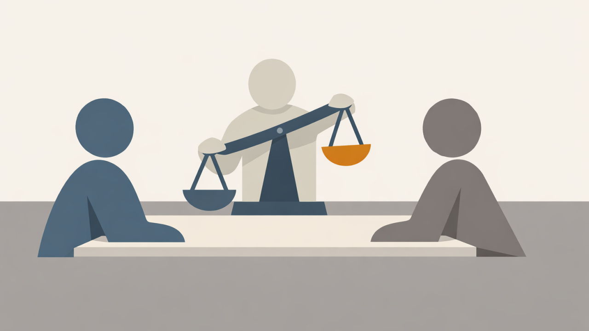
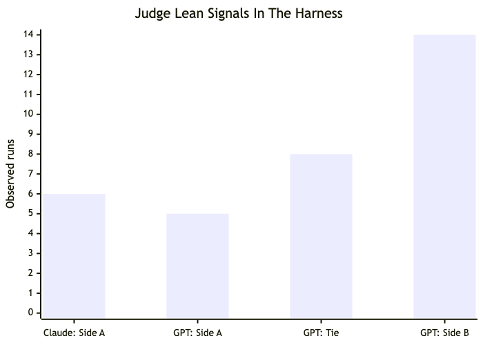
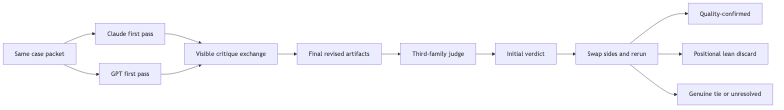
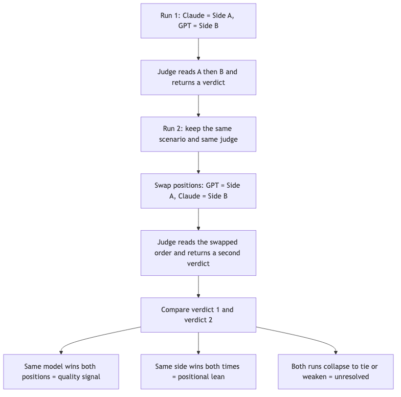
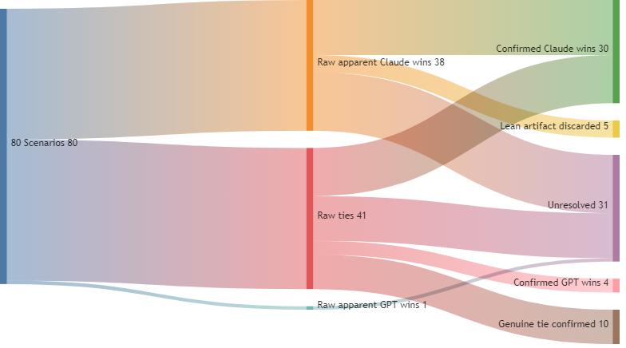
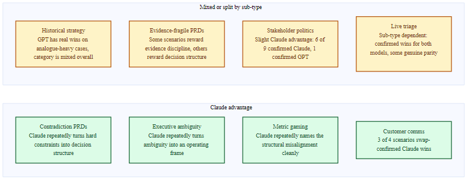
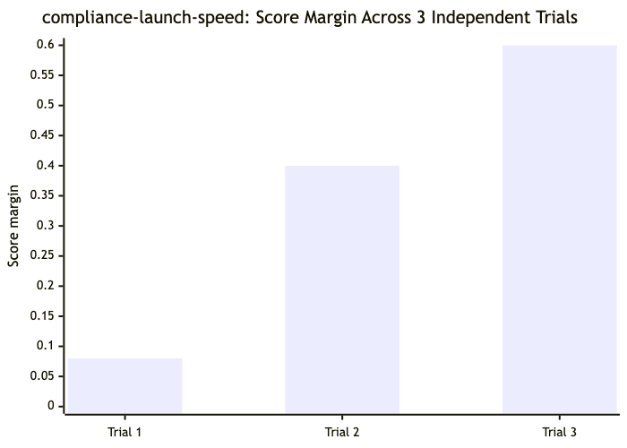
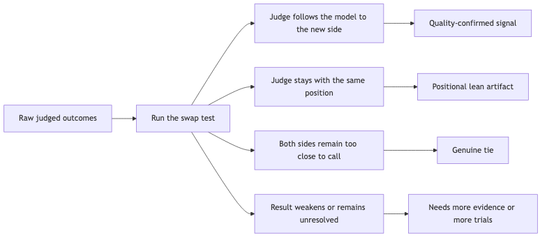

TL;DR
- I built a harness to compare Claude and GPT on real PM scenarios, then used swap-testing to separate real quality differences from judge bias.
- The biggest methodological lesson is that you cannot trust a single AI judge at face value. Every judge family has a lean, so position-swapping is essential.
- In my corpus, Claude was strongest on ambiguous, constrained, and decision-heavy PM work. GPT was strongest on some evidence-disciplined and analogy-driven cases. In many standard PM scenarios, the difference did not matter much.
- The most useful output was often not the winner label. It was the uncertainty payload: what was missing, what needed verification, and what decision should wait for better evidence.
- The biggest caveat is that these systems are much better at reasoning structure than factual specificity. They often produce strong decision frames wrapped around invented numbers, thresholds, or citations.
It started with a simple problem
Product managers spend a lot of time producing artifacts such as PRDs, decision briefs, strategy memos, and escalation documents. The pitch for AI is straightforward: hand the AI your context and constraints, get a first draft in minutes instead of hours, then spend your time improving and deciding rather than writing.
That pitch is real. I built Shipwright, an open-source PM toolkit, to make it more reliable. The problem with raw AI prompting is inconsistency. Ask the same question on different days and you can get different answers. Shipwright adds structure: standardized templates, pass/fail readiness gates, explicit evidence requirements, and forced decision frames. The result is less ceremony, but the ceremony that remains actually does something. Artifacts consistently show their work: what evidence was used, what is still unknown, and what decision needs to be made and by whom.
Shipwright is a collection of 46 skills, 7 agents, and 17 chained workflows. Together they cover everything from discovery to PRD development to launch readiness. The open-source version works with a single AI model. You bring Claude, or GPT, or whatever model you have access to, and Shipwright imposes discipline on what it produces.
That worked. But it surfaced a harder question.
The question I didn't know how to answer
Once Shipwright was producing consistently structured outputs, a different problem became visible: which model should you trust?
Ask Claude and GPT the same strategic question, and you get different answers. The differences are often substantive, not superficial. Claude might recommend a 6-week validation sprint before committing to a build. GPT might recommend shipping a smaller scoped version now and iterating. Both answers can be internally consistent. Both can be well-reasoned. They are just not the same answer.
The naive response is to run both and pick the one you agree with. But that is circular. You are just using the AI to confirm your existing instinct, which is not actually a decision-quality improvement.
The more rigorous response is to ask a third model to evaluate both answers and pick the better one. I tried this. It didn't work.
The problem: every model has a measurable preference for outputs that look like what it would have generated. Ask Claude to evaluate a Claude response versus a GPT response, and Claude will call its own output superior the overwhelming majority of the time. Ask GPT to judge between the two, and GPT does the same thing in the opposite direction. The "judge" model is not neutral.
I started calling this the judge lean problem. And it's worse than it sounds.
The lean problem, measured
When I started systematically testing this, I found that model bias in judging is structural:
Claude-as-judge shows a near-total positional lean toward Side A: whichever artifact it reads first. In my runs, Claude called Side A the winner in every single Claude-judged scenario, including swap runs where Side A was GPT's output. That last detail matters: it means the lean is primarily positional, not stylistic. The plausible mechanism is that Claude heavily weights "decision usefulness" (pass/fail gates, named owners, immediately executable next steps) and Claude-authored artifacts tend to lead with exactly those features. But when position and style were separated by the swap test, position dominated. Claude voted for GPT's output when GPT was in the advantageous seat.
GPT-as-judge leans toward Side B at roughly 3x the rate it leans toward Side A. In 27 baseline runs, GPT called Side B the winner 14 times, Side A 5 times, and declared a tie 8 times. GPT's mechanism is different from Claude's: it tends to weight evidence discipline heavily, and it frequently calls ties or favors Side B in scenarios where Side A was more operationally specific but reached beyond the available evidence to get there.
Gemini-as-judge, the model I eventually used as the primary adjudicator, has a documented first-read positional lean of approximately 53%. Show it Response A and then Response B, and it marginally favors A. Show it B and then A, and it marginally favors B.

In my tests, Claude, as judge, overwhelmingly favored Side A. GPT, as judge, favored Side B much more often than Side A and also produced a meaningful number of ties. Judge outputs are not neutral by default — you have to interpret them through the lean profile of the judge family.
None of this reflects the actual quality of the answers. It reflects the fact that these models developed systematic preferences in training, and those preferences carry over into judging contexts. They encode views about what good reasoning looks like, what an actionable artifact looks like, and which position feels more aligned with the model's own instincts.
The practical consequence: you cannot run two AI answers through a third AI judge and trust the verdict without controls. Not without knowing which direction the judge leans and designing your measurement to account for it.
Building controls: the harness
This is why I built ShipwrightPlus, a cross-model conflict harness that wraps the comparison with enough methodology to make the results interpretable.
The key insight was borrowed from medicine: randomized position testing, plus a blinded third-family judge.

The harness is not just "two models and a judge." It is a staged process that preserves independent first drafts, forces critique, then uses a swap rerun to separate real quality signals from position effects. Without the swap step, many apparent wins remain ambiguous.
Phase 1: Independent first pass. Claude and GPT both receive the same case packet: the scenario, the evidence, and the rubric for what a good artifact looks like. They work independently. Neither sees the other's response. Both produce a first-draft artifact, whether that is a PRD, a decision brief, or a strategy memo.
Phase 2: Rebuttal. Both models receive the other's artifact, labeled only as "Side A" or "Side B." Provider names are removed. Each model then produces a written critique identifying weaknesses in the other's argument.
Phase 3: Final revision. Each model can revise its own artifact once, incorporating or explicitly rebutting the critique it received.
Phase 4: Judgment. Gemini, a third model from a different company entirely, receives the full transcript. That includes both final artifacts and both critiques. It scores them on five dimensions: claim quality, evidence discipline, responsiveness to critique, internal consistency, and decision usefulness. Then it picks a winner or declares a tie.
Artifacts are presented to the judge as "Side A" and "Side B" with provider names removed. But each model writes in a recognizable style, and a sophisticated judge may be able to infer which model generated which output from structural patterns and vocabulary alone. This is a real limit on the blinding — it is best-effort containment, not a guarantee.
Even with best-effort blinding, Gemini's 53% first-read lean is a problem. If Claude is Side A and Gemini calls Side A the winner, that could be a real quality signal. It could also just be the lean at work.
The solution: re-run the scenario with sides swapped. Claude becomes Side B, GPT becomes Side A. Same scenario, same judge, sides reversed.

The question is not just "who won?" The question is whether the winner travels with the model when positions reverse. If it does, that is evidence of quality. If it does not, the original result was probably positional.
If Gemini still calls Claude the winner after Claude has been moved to Side B, that is a meaningful quality signal. In that case, the judge had to work against its own first-read preference to reach the verdict.
If Gemini flips and now calls GPT the winner because GPT is now Side A, that means the original result was positional, not qualitative. The verdict gets discarded.
I call a result that survives the position-swap test swap-confirmed. Only swap-confirmed results are treated as evidence of genuine quality difference.
What the data showed
I built a corpus of 80 scenarios across 8 scenario types. The scenarios came from a mix of real-life news events, HBR-style business cases, and situations drawn from my own years working in product management. The claims in this article come from swap-tested comparisons and, where noted, repeated-trial examples.

I want to be clear here: I don't claim my findings to be statistically significant. Making hard determinations would require far more runs and expertise. I describe the results as directional tendencies rather than win rates, for reasons explained in the next section.

The image above is a map of where the current corpus shows the clearest recurring Claude pattern and where results are mixed or split by sub-type. Four categories show a consistent Claude advantage: contradiction PRDs, executive ambiguity, metric gaming, and customer communications (3 of 4 swap-confirmed). Four categories remain mixed or sub-type dependent: historical strategy, evidence-fragile PRDs, stakeholder politics (slight Claude advantage: 6 of 9 confirmed Claude, 1 confirmed GPT), and live triage (confirmed wins for both models).
FINDING 1: Many scenarios don't cleanly discriminate, and that is informative
On a substantial share of scenarios, Claude and GPT produced artifacts that Gemini could not consistently distinguish, even after position-swap testing. In these cases, the models converged on similar quality but expressed it in different styles. The emphasis differed. The framing differed. But when scored on the dimensions that matter for PM decision-making, neither model had a reliable edge.
This is useful information, not a null result. It tells you which scenario types discriminate between the models and which do not. When a scenario does not discriminate, you should stop worrying about model choice and focus instead on your prompts, your templates, and your evidence quality. That is exactly the layer Shipwright is designed to improve.
The cases that do discriminate are worth understanding carefully, because they reveal something about how each model reasons differently.
FINDING 2: On specific scenario types, one model consistently outperforms the other
The swap-tested corpus suggests that model choice can matter across eight specific scenario types:
Where Claude tends to win: Scenarios involving genuine ambiguity. These include conflicting stakeholder demands, decisions where both options have legitimate support, evidence that is real but insufficient, and constraints that make the requested artifact impossible to deliver as specified. On these scenarios, Claude consistently produces what I came to call decision architecture. It names the evidence gap as the central problem rather than working around it, reframes binary choices into a menu of structured options with named tradeoffs, and proposes a concrete next artifact such as a validation brief, a decision gate memo, or a Pre-Commit Decision Document that moves the conversation forward.
Where GPT tends to win: Scenarios requiring deep historical analogy and scenarios involving quantitative survivorship-bias diagnosis. In these, GPT's tendency toward evidence discipline and calibrated uncertainty produces better outputs. GPT is more likely to stay within the evidence and less likely to reach beyond it. The four swap-confirmed GPT wins in the corpus are: meta-muse-spark (historical strategy analogy), pilot-survivorship-bias (quantitative survivorship-bias diagnosis), stakeholder-politics-ai-ownership (competing organizational priorities with a strong political dimension), and live-triage-data-pipeline-corruption (live triage where evidence discipline under pressure mattered more than decision architecture).
The eight scenario types where model choice appears to matter:
- Executive ambiguity (conflicting leadership signals, no clear mandate)
- Contradiction or boundary PRDs (legal constraints, competing commitments, the requested feature is impossible as specified)
- Fragile evidence (decisions built on weak, proxied, or misinterpreted data)
- Historical strategy (what can analogous past decisions teach us)
- Incentive and metric gaming (a metric is winning but the underlying business is being harmed)
- Customer communication constraints (you can't say what you actually think)
- Stakeholder politics (two senior leaders want incompatible things)
- Live operational triage (production incident, launch at risk, decisions under time pressure)
At this point, I think the clearest Claude signal is in contradiction or boundary PRDs, executive ambiguity, and incentive or metric-gaming scenarios. Customer communication constraints now show a consistent Claude advantage: three of four scenarios produced swap-confirmed Claude wins. Stakeholder politics has moved from mixed to a slight Claude advantage: six of nine scenarios produced swap-confirmed Claude wins, with one GPT win and two unresolved. GPT has confirmed advantages on historical strategy analogues and survivorship-bias diagnosis. Evidence-fragile PRDs remain mixed overall, because some scenarios reward GPT's evidence discipline while others reward Claude's decision structure. Live operational triage remains the most sub-type dependent: three scenarios produced confirmed Claude wins, but the category also contains a confirmed GPT win and two genuine parity results. The discrimination pattern within triage does not hold consistently across the category.
FINDING 3: The strongest claim in the corpus is built on repeated trials, not a single run
Before I get to the corpus-level pattern, it is worth naming the most defensible data point I have: the compliance-launch-speed scenario.
This is a contradiction or boundary PRD scenario. A PM has been asked to produce a standard launch plan, but a compliance constraint makes the requested plan impossible as written. I ran this scenario three independent times through the full four-phase harness. Claude won all three. Margins ranged from 0.08 (barely above threshold) to 0.60 (moderate). Both Gemini and GPT acted as judge across the three trials, and both judge families overrode their own documented positional lean to call Claude the winner.

The same scenario produced the same directional winner across three independent trials, but the score margin varied materially from run to run. Repeated direction matters more than any single score margin — a model can have a real edge on a task type even when individual runs fluctuate in strength.
This is, I believe, the strongest quality signal in the corpus: consistent directional winner, multiple independent trials, cross-judge confirmation, with both judge families going against their own lean to reach the same verdict.
A second scenario, metric-gaming-engagement-loop, involves a PM discovering that an engagement metric is hitting targets while the underlying product health is deteriorating. Claude won two of the three trials, and the third produced a tie. GPT did not win any of the three. The pattern is directional rather than absolute, but the direction is consistent.
These two scenarios are the right anchors for any external claim. The broader corpus pattern includes 30 swap-confirmed Claude wins across the eight scenario types and 4 swap-confirmed GPT wins. That is directionally meaningful, but the category-level story matters more than the raw counts: some families now look durable, some are mixed, and multi-trial data is still substantially more trustworthy than single-trial counts for individual scenarios.
FINDING 4: Swap-testing materially changes what the data says
Before position-swap testing, the raw Gemini-judged outcomes showed a headline number that looked like a large Claude advantage. After swap-testing, the picture changed significantly: some apparent wins were positional artifacts, some resolved to genuine ties, and some remained real quality signals.

Swap-testing turns a raw judged result into one of four more meaningful categories: quality-confirmed signal, positional artifact, genuine tie, or still-unresolved case. The swap test is not a nice-to-have — it is the filter that makes the rest of the findings interpretable. Any model comparison published without swap-testing is likely reporting positional lean as model quality.
What the winning artifacts actually look like
The most useful finding is not the count of wins. It is the pattern. Across Claude's swap-confirmed wins, the same structure appears:
The evidence gap is named explicitly, not worked around. Where GPT tends to treat ambiguous evidence as a constraint and produce an artifact within it, Claude tends to name the ambiguity as the actual problem. "The decision we're being asked to make cannot be made with the evidence we have" is a different artifact than "Here is a plan conditional on X, Y, and Z being true."
Binary choices get reframed as option menus. Ship vs. don't ship becomes: (1) ship with risk accepted and owner defined, (2) scope reduction to reduce risk with specific requirements stated, (3) pause for a validation sprint with a named deliverable and a date for revisiting the build decision. The PM now has a document to walk into a leadership meeting with instead of a recommendation that requires explaining from scratch.
The next artifact is named and specified. The output doesn't end with "gather more evidence." It ends with "the next artifact is a 2-page validation brief, here's who commissions it, here's what it needs to answer, here's when the decision gets revisited."
GPT's winning pattern is different but equally coherent: it tends to stay tighter to the evidence, resist ungrounded specificity, and produce artifacts that are more honest about what isn't known. Claude often converts ambiguity into a decision-ready operating structure. GPT often stays closer to what the evidence actually supports.
Whether you should specify a rollout percentage when it is not in the data is still an unresolved question in PM practice. One reading is that this is decision architecture that moves the work forward. Another is that it is invented specificity that creates false confidence. The harness surfaces that tradeoff. It does not settle it.
The caveat that makes this more credible, not less
The harness is good at evaluating which artifact reasons better. It is not a factual accuracy engine. That distinction matters.
I found a consistent pattern across generated artifacts: the structural layer is trustworthy; the specificity layer is not.
The structural layer includes decision frames, evidence gaps, pass/fail gates, and recommended next artifacts. It is generally well-formed and grounded in the scenario constraints. This is the part most useful to PM practitioners.
The specificity layer includes the numbers, benchmarks, citations, and thresholds embedded within those structures. This layer regularly contains fabricated content. The figures are invented by the model to make the argument feel more grounded than the available evidence supports.
Some examples from the corpus:
A scenario with zero context files produced an artifact citing "internal modeling, ctx-1" as a source. That label sounded like an internal document reference, but it did not exist. The model invented a citation to support two key claims, and the judge did not catch it because the overall artifact was otherwise strong.
A scenario with no market data produced an artifact stating that enterprise customers in specific verticals lose "0.3–1.8% of GMV to fraud." (GMV = gross merchandise volume.) No such figure was in the case packet. The judge did penalize this — the specific number was part of why the artifact lost. But the fabricated claim still appears in the committed output.
A scenario specifying "6 months of engineering effort" produced an artifact translating that into "$600K–$1.2M in fully-loaded cost." The direction of the argument (this is expensive, raise the evidence bar) was correct. The number was made up.
This pattern is not random. Models generate structurally correct arguments and then populate them with invented specifics to make the argument feel more rigorous. The harness now includes explicit constraints against this — injecting evidence boundaries into prompts, checking for phantom citations after generation, and instructing the judge to flag ungrounded specifics. But the pattern is still worth naming clearly.
The practical implication: Treat the decision frame, the evidence gap list, the pass/fail gate structure, and the recommended next artifact as the reliable outputs. Treat specific numbers, thresholds, benchmarks, and citations as illustrative until verified against a real source.
This does not invalidate the verdicts. A side can win by producing better decision architecture even when both sides contain fabricated supporting data. The harness is measuring reasoning quality and decision usefulness, not factual accuracy. That is still a real and useful thing to measure, but it is worth being clear about what it is.
The finding that has no winner
The most intellectually interesting result from the research didn't produce a clear verdict. It produced a genuine philosophical disagreement between two rigorous judges.
I ran scenarios designed to probe a specific question: when the evidence is genuinely ambiguous, and not simply broken or obviously insufficient, which model makes the right call? These are cases where uncertainty is high enough that either acting or waiting is defensible.
Example: a PM has an A/B test result that hit p=0.09 (directionally positive but short of the p<0.05 threshold most teams use before calling a result statistically convincing), with a hard Q2 deadline. Do you ship, or do you wait for more data?
Gemini's verdict: Claude wins. Claude produced a gated conditional document: here's the specific evidence needed to clear the gate, here's what happens if you can't get it by the deadline, here's the exact decision frame for the exec who has to make the call.
GPT-as-judge's verdict: GPT wins. GPT's artifact avoided specifying a rollout percentage and validation window that weren't in the evidence packet. It was more honest about what it didn't know.
The critical detail: both verdicts survived position-swap testing. This is not a case of one judge simply being wrong. Both judges came from different model families, and both went against their own positional lean. Even so, they reached opposite conclusions on the same artifact pair. The disagreement is genuine.
Gemini rewards Claude's architectural specificity. GPT rewards GPT's evidence discipline. The harness surfaced the fact that both approaches have legitimate defenders. It cannot settle which is correct, because the real question is what "good PM judgment under uncertainty" actually means. On that point, there is no consensus.
What this tells you practically: if you are in an ambiguous-evidence situation and you want the most actionable artifact, the current evidence suggests Claude. If you want the most epistemically honest artifact, it suggests GPT. If you are not sure which you need, run both. The disagreement between them is itself information.
A note on who can use the harness today
The system is trustworthy for technically sophisticated practitioners: people who understand the positional lean, know to look at the decisive dimension rather than just the winner label, treat the uncertainty payload as primary output when it's present, and run swap tests before publishing results.
For this user, the harness produces real signal.
For a less experienced user who runs the default command and reads the winner label at face value, the default output is actively misleading. A high-confidence verdict with a large margin reads as "this is clearly the better artifact." The correct reading is conditional on whether the judge went against its lean, whether the margin is stable across multiple runs, and what the decisive dimension was. None of that is obvious from the output itself.
Closing this gap is one of the core product problems for ShipwrightPlus. The research works. The interpretation is non-trivial. The challenge is not better judging — it is better presentation of what the verdict actually means and what you should do next.
What this means for how you use AI today
My practical takeaway is not "always use Claude" or "always use GPT." It is that model choice matters unevenly. Sometimes it matters a lot, and sometimes it barely matters at all.
Standard PM work with no special ambiguity or constraint: Either model. In much of the corpus, the difference is not load-bearing. Prompt quality, structure, and evidence quality matter more. (Confidence: moderate)
Conflicting stakeholder signals or unclear leadership mandate: Claude. Claude more often turns ambiguity into a decision-ready operating structure. (Confidence: moderate to strong)
Requested artifact is impossible as specified due to a hard constraint: Claude. Claude more often reframes the work into decision architecture instead of forcing a brittle artifact. (Confidence: strongest current signal)
Historical analogue or retrospective strategy pattern-matching: GPT. GPT's confirmed wins are strongest where disciplined analogy matters. (Confidence: narrow but real)
Quantitative survivorship-bias diagnosis: GPT. GPT stays tighter to evidence and won the cleanest survivorship-bias example. (Confidence: narrow but real)
Genuinely ambiguous evidence, where either acting or waiting is defensible: Run both. The disagreement itself is informative because the models optimize for different notions of good judgment. (Confidence: high for the split, lower for a single winner)
Low-confidence verdicts, ties, or review-flagged cases: Trust the uncertainty payload more than the winner. The next-action guidance is often more useful than forcing a directional claim. (Confidence: strong)
Cases where both models look similar after swap-testing: It does not matter much. This is the zone where model choice is a distraction and workflow quality matters more. (Confidence: moderate)
On trusting single outputs: Multi-trial testing showed that even confirmed wins have real variance. The same scenario run three times produced margins ranging from 0.08 to 0.60. A single AI output, even from the "right" model for your scenario type, can be a weaker version of what that model is capable of. Running it a second time, or asking the other model to critique it, catches weaknesses the first run missed.
The most underrated output from cross-model comparison: Not the winner. The uncertainty payload. On hard cases, the harness produces a structured breakdown: what is missing, what questions would resolve the case, what evidence is needed, and what the next artifact should be. This payload is often more decision-useful than the winner label. Even when both models produce equally strong final artifacts, the critique exchange produces something neither model would have generated alone: a list of the questions the artifact does not answer.
What comes next?
This research is not finished. There are three open questions I want to follow up on because they affect how much you should trust the current findings and what you can expect from the tools going forward.
Open question 1: The genuine split. The most unresolved result in the corpus is the finding described above. Gemini and GPT reached opposite swap-confirmed verdicts on the same artifact pair. This is not a measurement error. It is a real disagreement about what makes a PM artifact good when the evidence is genuinely ambiguous. The harness cannot resolve this because no judge is neutral on it. What's needed next is a human-review panel: working PMs asked to evaluate both artifacts blind, with a clear rubric. If experienced PMs consistently prefer one approach, that becomes the calibration point for which judge to trust. If PMs also split, that is its own finding.
Open question 2: Sub-type patterns. The eight scenario types in the current corpus are coarse. "Executive ambiguity" covers both situations in which a leader has been unclear about priorities and those in which two leaders have given contradictory directives. These may call for different decision architectures. Expanding to 120–150 scenarios with finer-grained sub-types would let us identify not just which model wins on "stakeholder politics" in general, but which model wins when the conflict is between a technical leader and a business leader versus two business leaders, or when the stakes are a budget decision versus a roadmap decision.
Open question 3: Accessibility. The harness currently requires CLI access to three separate AI providers, a working Node.js environment, and enough familiarity with the command line to run a batch job. That significantly reduces the number of people who can use this tool effectively. The ShipwrightPlus roadmap includes a lighter-weight interface — the goal is to let a user describe their decision context in plain language, have the system classify the scenario type, and return a structured comparison without managing three API subscriptions or running scripts. If you have strong opinions about what form that should take, that is useful input.
How to get the tools
Shipwright (open source) is at github.com/EdgeCaser/shipwright. It works with a single AI model. The structured PM workflow templates, adversarial review patterns, and readiness gates are all there, no additional subscriptions required.
ShipwrightPlus is in private development and is a different kind of tool. It requires CLI access to Claude (Anthropic subscription), GPT-5.4 (OpenAI Codex access), and Gemini (Google AI). Running a batch of 10 scenarios through the full four-phase debate, plus position-swap testing, consumes a meaningful number of tokens across three providers. If you are a Product Manager or team lead making decisions where being wrong costs real time and money — pricing changes, build-vs-buy calls, launch timing, restructuring choices — and you want access to the cross-model conflict harness, the calibrated scenario library, or the research findings, reach out at contact@edgecaser.com.
The full scenario corpus, methodology documentation, and findings dashboard are available on request. All research was conducted using Claude Sonnet as Side A, GPT-5.4 (via the OpenAI Codex CLI, model_reasoning_effort=medium) as Side B, and Gemini 2.5 Pro as the primary judge. 80 scenarios, 8 scenario types.
Making a model choice with real stakes behind it?
If your team is deciding which model to trust for decision-heavy work, Edgecaser can help you set up the evaluation and the review points before the choice gets expensive.
Let's talk about your product